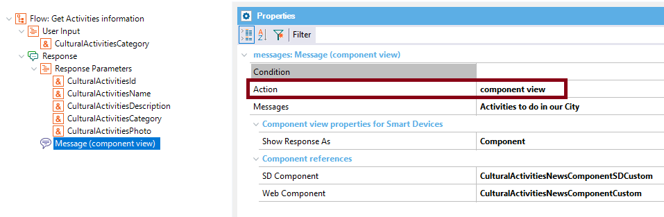

Define the behavior to show the message. Values
Description
The Action property determines the behavior of the response of the Flow of a Conversational instance. The Chatbot Message (child of the Chatbot Response node) can be a component (Web or SD) or a text message. In other cases, the message is shown and afterwards, another flow is automatically executed after having finished this one.  When the Action property is set to Component View, the Show Response As property is activated. AvailabilityThis property is available since GeneXus 15 upgrade 12. Scope Objects: Conversational Flows See Also
|
| Backlinks | ||
| Chatbot Message | Chatbot Response | |
| Conversational Object property | Generated Component property | |
| Generated Web Component property | Show Response As property | Web Component property |